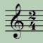
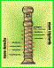

PÁGINAS WEB DE ISABEL Y JOSE RAMÓN
Aquí tenéis la colección de las páginas web que hemos ido realizando desde que empezamos a conocer este mundillo de Internet. Veréis que la mayoría van de música, orientada sobre todo a la enseñanza de música en niveles de Primaria. Espero que os sean útiles y disfrutéis. Así mismo espero vuestras sugerencias.
Ten paciencia y espera que se carguen las imágenes y los sonidos
(Mantén siempre conectados los altavoces).
Lista cronológica de los compositores más importantes: imágenes, biografías y obras principales (en formato midi).

Sencillas explicaciones de los conceptos musicales básicos bien estructurados para iniciarse en el lenguaje musical.

Conoce este instrumento y su uso. Esta página supone un instrumento de consulta básico para su aprendizaje. Incluye partituras sencillas de canciones populares.
Estructuración de los instrumentos musicales con fotografías y explicaciones: Instrumentos de la orquesta; Instrumentos escolares; Otros instrumentos.
¿Quieres construir tus propios instrumentos musicales? Aquí encontrarás muchas ideas sencillas con imágenes y explicaciones muy claras.
Recopilación de canciones populares. Puedes escucharlas (midi) e imprimir la partitura o la letra. Podrás hasta cantarlas como si estuvieras en un karaoke.
Recopilación de los mejores villancicos en español, en inglés o en otros idiomas. También podrás escucharlos en formato midi y cantarlos.